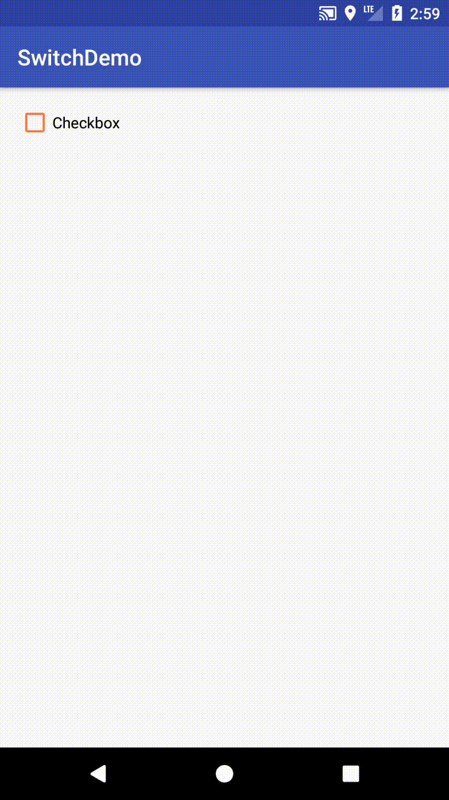
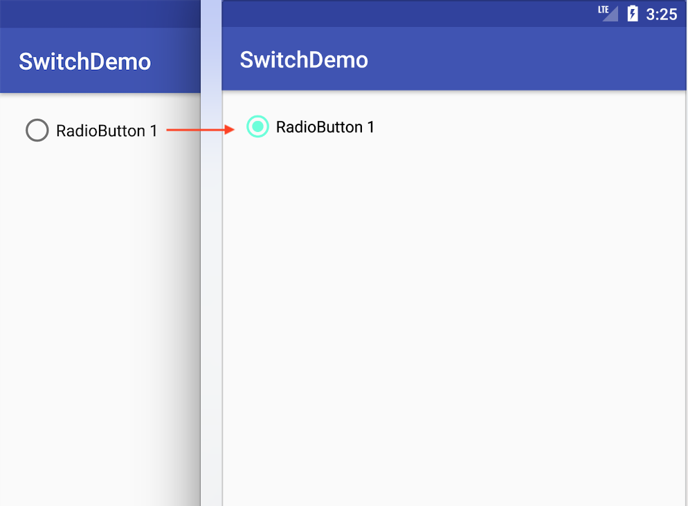

Introduction
Selection Controls是在Android上很常見的元件，這些控制元件包括 Switches、CheckBoxes、Radio buttons接下來我們使用support.v7.widget包下的元件，來看看這些具有Material Features的元件怎麼使用，這邊值得注意的一點是，support.v7.widget包下的元件，要顯示Material Features需在Android版本Lollipop(5.0)之後的版本。
Create a SwitchCompat
首先在layout文件下，引用support.v7.widget包下的SwitchCompat
layout:
1 | <android.support.v7.widget.SwitchCompat |
運行效果如下：
SwitchCompat預設的狀態都是false，想要改變預設狀態，只要在SwitchCompat添加屬性android:checked就行了
1 | android:checked="true" |
SwitchCompat的顏色預設是使用**@color/colorAccent，想要改變顏色，需先創建一個新style，並自訂colorAccent**的顏色
styles.xml:
1 | <resources> |
接著在SwitchCompat添加屬性app:theme為我們自定義的新style
1 | app:theme="@style/SwitchTheme" |
運行效果如下：
在程式碼裡監聽點擊事件
1 | switchCompat.setOnCheckedChangeListener(new CompoundButton.OnCheckedChangeListener() { |
Create an AppcompatCheckBox
在layout文件下，引用support.v7.widget包下的AppcompatCheckBox
layout:
1 | <android.support.v7.widget.AppCompatCheckBox |
運行效果如下：
改變預設狀態，只要在AppcompatCheckBox添加屬性android:checked就行了
1 | android:checked="true" |
AppcompatCheckBox的顏色
1.狀態true時，使用colorAccent
2.狀態false時，使用colorControlNormal
改變顏色，需要創建一個新style，並在裡面定義兩個item的顏色
styles.xml:
1 | <resources> |
接著在AppcompatCheckBox添加屬性app:theme為我們自定義的新style
1 | app:theme="@style/CheckBoxTheme" |
運行效果如下：

在程式碼裡監聽點擊事件
1 | checkBox.setOnCheckedChangeListener(new CompoundButton.OnCheckedChangeListener() { |
Create an AppCompatRadioButton
AppCompatRadioButton 比較值得注意一點是，它只要state = true後，就無法透過點擊設為false
在layout文件下，引用support.v7.widget包下的AppCompatRadioButton
layout:
1 | <android.support.v7.widget.AppCompatRadioButton |
運行效果如下：
改變預設狀態，只要在AppCompatRadioButton添加屬性android:checked就行了
1 | android:checked="true" |
AppCompatRadioButton的顏色預設是使用**@color/colorAccent，想要改變顏色，首先需要創建一個新style，自訂colorAccent**的顏色
styles.xml:
1 | <resources> |
接著在SwitchCompat添加屬性app:theme為我們自定義的新style
1 | app:theme="@style/RadioButtonTheme" |
運行效果如下：

在程式碼裡監聽點擊事件
1 | radioButton.setOnCheckedChangeListener(new CompoundButton.OnCheckedChangeListener() { |
Add a RadioGroup to the AppcompatRadioButton
如果我們想要創建一排AppcompatRadioButton列表，並保持列表中，只有一個state = true(被選中)，其他為false，那麼就需要使用RadioGroup
RadioGroup使用起來很簡單，只要引用在AppcompatRadioButton外層就行了
layout:
1 | <RadioGroup |
運行效果如下：
在程式碼裡監聽點擊事件
1 | radioGroup.setOnCheckedChangeListener(new RadioGroup.OnCheckedChangeListener() { |
參考網站:
Android SwitchCompat
Android AppCompatCheckBox
Android AppCompatRadioButton
Android RadioGroup
Material Design Selection controls